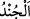
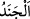
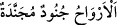
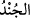

sordular. Cevâben dedi ki: “Tek olan Allâh’a yemin olsun ki eğer geri dönmeseydi ya
ben onu öldürürdüm, ya da o beni öldürürdü.”
Hendek savaşı günlerinden birinde Rasûlullah (s.a.)’in ve ashâbının ikindi namazları
kazâya kaldı. Bunun için Hz. Peygamber (a.s.) “Bizi orta namaz olan ikindi
namazından meşgul edip alıkoydular. Allah onların kabirlerini ve evlerini ateş
doldursun!”[177] buyurdu. İşte bu onların dünyâda evlerinin harap olması, kabirlerinde
de cehennem ateşine maruz kalmak sûretiyle iki cihanda da azaba dûçar olmaları için
yapılmış bir bedduâdır. Buna göre ‘evlerini ateşle doldursun’ ifâdesinde ateş, fitne için
istiâre olarak kullanılmış olur.
Rasûlullah (s.a.) insanlar arasında doğrularak şöyle buyurdu: “Ey insanlar, düşmanla
karşılaşmayı temennî etmeyin Allah’tan âfiyet isteyin. Şâyet düşmanla karşılaşırsanız
sabır gösterin ve bilin ki cennet kılıçların gölgeleri altındadır.”[178] Yâni Allah
yolunda kılıç vurmak insanı cennete ulaştıran sebeptir.
Sonra Hz. Peygamber (s.a.) müttefik düşman ordularına bedduâ etti ve şöyle buyurdu:
“Ey Kitabı indiren, hesabı çabuk olan Allâh’ım, bu düşman ordularını mağlup eyle.
Allâh’ım, onları hezimete uğrat, onlara karşı bize yardım eyle ve onları silkeleyip
helak eyle.”[179] Yine Rasûlullah (s.a.) şöyle duâ etmiştir: “Ey felaketzedelerin
imdadına yetişen, darda kalanların duâsına icabet eden Allâh’ım, benim dert, tasa ve
kederimi gider ve izale eyle. Sen benim ve ashabımın başına nasıl bir bela indiğini
görüyorsun.” Müslümanlar Rasûlullah (s.a.)’e: “Artık iyice yüreğimiz ağzımıza geldi,
bizim yapabileceğimiz bir duâ var mı?” dediler. O da: “Evet, siz de: “
Allâh’ım ayıplarımızı ört, bizi korktuklarımızdan emin eyle” diye duâ edin.”[180]
buyurdu.
Allah Teâlâ bir Çarşamba günü öğle ile ikindi arası O’nun duâsını kabul etti. Cebrail
(a.s.) geldi ve Allah Teâlâ’nın düşman üzerine fırtına ve (görünmeyen) ordular
gönderdiği müjdesini verdi. Rasûlullah (s.a.) bu durumu ashabına bildirdi ve ellerini
sık sık kaldırarak “Şükürler olsun, şükürler olsun” dedi. İşte bu âyet bunu ifâde
etmektedir.
“Ey îman edenler! Allâh’ın size olan nîmetini hatırlayın” Nîmeti hatırlamak ona
şükretmektir. Yâni Allahın size olan yardım ve zafer nîmetine şükredin demektir. “Hani
size ordular” Kureyş, Gatafan ve benzerlerinden diğer gruplardan meydana gelen
düşman orduları “saldırmıştı da biz onlara karşı” geceleyin el-Kahhâr ismi tarafından
“bir rüzgar” sabâ rüzgarı “ve sizin görmediğiniz ordular” sayıları bin olan melekleri
“göndermiştik.”
Katı ve kuvvetli oluşu bakımından askere “__WORD__ denir. Sert ve taşlık olan yer demek
olan “__WORD__den gelmektedir. Sonra “__WORD__ (Ruhlar düzenli/toplanmış
ordulardır)”[181] hadîsinde de olduğu gibi her topluluğa “__WORD__ denilmiştir.
Sabâ rüzgarı, doğu yönünden, debûr ise batı yönünden esen rüzgârdır. İbn Abbas
(r.a.) şöyle demiştir: “Sabâ rüzgarı batıdan esen debur rüzgârına: “Es de bizi